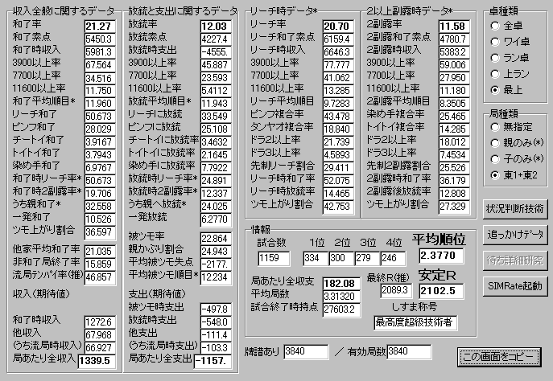

最上卓で勝とう！
（未完） とつげき東北
概論：
麻雀に強くなるための方法論
最上卓で勝つ打ち方（主に平場）
各論：
麻雀はまだ、「理論だけで勝てる」ほど研究されていない。
つまり、実戦からも多くを学ぶ必要がある。
この講座は「理屈」よりも、とつげき東北の経験を重視して記述する。テクノロジーではなくてスキルだ。
実際おれが打った状況をたくさん取り上げ、その時に何を考えていたかを書く。
それから、そうしたたくさんの状況を集め、そのような時に何を考えているのかを書く（これが、一般化という作業だ）。
自分の打ち方を固定するためと、麻雀技術向上を目指して頑張っている人のためにだ。
とつげき東北が書くのだから、「強い人がさらに強くなる」ための最高の講座になるはずだ(笑)。
麻雀に強くなるための方法論：ダラダラ書いてますが、大切なので読もうね。
ここを読んでいる人は、たぶん、麻雀に強くなろうと思っている人だと思う。
では、あなたは麻雀に強くなるために、具体的にどのような工夫をしていますか？
講座を読んで、観戦して、自分は打たないで、本当に実力がつくと思いますか？ まず無理やね。
漠然と打っているだけで、本当に、安定Ｒが1800からいきなり2000まで上がると思いますか？ 無理無理。
ちゃんと、強くなるためにすべきことがある。
１つは、理屈で考えて強くなる部分。
役を覚えることや、点数計算を覚えることで、強くなることができるだろう。
他にも、「振り込んだら負けるよな・・・」→「テンパイが遠いのにリーチされた場合は降りることにしよう」と考えて、「降り」を覚える。また、「リャンメン待ちなら、４が出ている時に７は当たりにならないな」と考えて、「スジ」を知るわけだ。
このあたりまでは麻雀の入門書などにも書いてあることなので、ある程度のレベルには達することができる。
他にも、優れた戦術書（おれの講座のような！笑 ）を読んだり、観戦することで、強い打ち方の理屈を知ることができるはずだ。
そしてもう１つは、実戦経験から強くなる部分。
「降りる」と言っても、相手の染め手が、だいたいどの順目にどういう切り牌なら危険になるかとか、そういった部分については、これまで誰も理論的に研究していない故に、「経験から」学ぶ部分が多くなるはずだ。
単にメンツを作ることだって、「メンツ作りの最善のアルゴリズム」などないから、主に経験的に訓練するしかないのが現状だ。
本当は全て「理屈だけで」解決されていればそれで良いのだが、実際にはそうでない以上、「経験」で強くなる部分も疎かにしてはいけない。
「読めば誰でも一瞬でＲ2000になれる教科書」が存在しない以上、そういう水準、それ以上の水準に到達するためには、理屈だけではなく、実戦での経験を積まなければならない、というのはしごく合理的な発言だろう。
「とつげき東北の麻雀講座を読んでＲが1600から1800まで上がった」「最近400試合の安定Ｒが2000超えた」というような人は多いけれども、しっかり数を打ちまくらない人は、結局はそこまでである。試合数をこなさずに観戦やら指導やらをしているだけの人は、他人の打ち方を「ここはこう、そこはそう」と色々「評論」するだけの、実力のない麻雀オタクになってしまうのがオチだ。結局、大まかな理屈がわかっても、一打一打の細かい判断についてはわかるはずもなく、いざ打たせてみるとヌルヌルなのだ（ちょうど、数学の解答を読んでわかった気になっているのと似ている。実際に自分で解こうとすると、思いがけず苦戦を強いられるものだ）。麻雀も同じで、例えば、頭で考えていると「ドラは大切にしないと・・・」と思うだろうが、実戦ではドラはけっこうバシバシ切った方が良いことが多かったりする。
さて、試合数をこなすのが大切であることは理解されただろうが、ただ漠然と打っているだけではダメだ。
東風荘で5000試合以上も打っているのにＲが伸び悩むような人が存在するということが、このことを裏付ける。
理屈だけでは麻雀で勝てないが、理屈なしの経験だけでも勝てないのだ。
まあ、もったいぶらずに強くなるための方法論を述べよう。
とつげき東北がこれまで実践してきた方法であり、とつげき東北はこの方法で、東風荘開始時安定Ｒ1800から、今や安定Ｒ2100の水準まで強くなったのだ。
・まず今の打ち方で打って、データを取る。
・打ちながら疑問になった「こういう場合どっちにすれば良いのだろう？」という部分について、片方を採用してまた打つ。
・偶然で結果がばらつくが、自分の願望を入れることなく、なるべく客観的に見て、どちらが有効か判断する。
・明確に強くなったようならその方法を取り入れ、その状況では必ずその方法で打つように固定する。
このことを繰り返す（もちろん、牌譜再現ツールや集計ツールを活用する）。
当然、２通りのうちのどちらを選択すれば良いのかが難しいような判断というのは無数にあるから、その全てに対してこの作業を繰り返すわけにはいかないだろう。
なるべく「出現頻度の高い、影響の大きい選択」をすくい取ることが重要だ。
例えば「ワンチャンスとスジ、どっちが安全だろう？」という選択は、かなりしょっちゅう出会う選択だ。この例のような、出現頻度が高く、試合結果に影響を与えやすい選択において「正解」を知ることは、効率的に麻雀技術を向上させることだろう（ほとんどの場合、スジの方が安全である）。
一方、「オーラスダントツトップの時に、役牌と数牌のシャンポンでテンパイ。リーチすべきか？」なんて選択は、そもそも出現頻度が高くないから、仮にこの選択で「間違った」選択を繰り返したとしても、「強さ」はそんなに大きく変わらない。そこでリーチしてしまったために、そのせいで追っかけに振って、しかもちょうど順位が落ちる、ということの起こる確率は非常に小さいから、とりあえず「強くなる」ために、その選択については「どっちでもええんちゃうの？」と考えておくと良いだろう（通常はリーチしない方が良いと思われる）。どちらかわからない部分は、素直に「どっちでも一緒」と考えて適当に打つのが望ましい。
出現頻度が高く、強さに最も大きな影響を与えるような選択を見つけだし、「実験」を通して、「正解」を手にしていく。
強くならないわけがない(笑)。
どちらの方が強いか、という判断には、理屈や統計データを用いると効率的になる。
東１で1000点上がることは有効かなあ？ と考えた時に、実際にやるよりも集計ツールで調べた方が早いわけだ。
プログラミングの技術を持っていれば、こういったちょっとした集計・計算もできるので便利だが、まあさすがに麻雀の研究のためにコンピュータの言語を学べとまでは言わないでおこう(笑)。
こうして、データを取りながら、理屈と統計を駆使しながら打ちまくって、「強い打ち方」を模索していくという姿勢が大切だろう。
漠然と強くなろうとしても、そう簡単になれるわけがない。１局１局の成功・失敗をいちいち気にしているようでは、あるいは短期間の成績でいちいち悩んでいるようでは、とてもじゃないけど強くならんよ。
講座を読むだけではダメだ。漠然と打つだけではダメだ。
データを取りながら、考えながら、打ちまくる。
こうやって意識的に強くなる努力をしない限り、君は永遠にドヘタのままだ。
一時的なＲの上昇・下降に一喜一憂し、一回ごとの和了・放銃に喜び怒り、それだけだ。
さてこの講座はとつげき東北の経験を一般化したものだ。
つまり上のような大変な作業の一部を、みんなの代わりにおれがやったのを公開しているわけだ(笑)。
ちゃんと活用してね。
他にも、最高水準の打ち手の牌譜を見るというのは一つの有力な「強くなる方法」だろう。おれは、おれより明確に強い人のまとまった牌譜を持っていなかったために、この方法は採れなかったが・・・。
ただし、１局１局の成功や失敗を見て「うわ、すごい」「ああ、残念」では何の役にもたたない。
「こういう場合にどう打っているのだろう？」という疑問と、その人の打ち方を照らし合わせて、その「答え」を知ることは有益だろう。
また、「師匠」というか、教えてくれる強い人を見つけるのも悪くないかも知れない。
とは言え、大半の「麻雀に強いだけの人」は、自分の打ち方を明確に語ることができず、また「語る気持ちよさ」のために、どっちでも大して違わないような選択においてさえ「ここはこちらを切る、なぜなら・・・」などと言い始めてしまうことが非常に多い。もっとひどいのは、強くなるための「姿勢」だとか「心構え」などの精神論を語り、技術的なことは何一つ語れないタイプの感動家である・・・。
しかも、最強水準の打ち手でない限り、彼の打ち方自体が間違っていることも少なくないだろう（例えば安定Ｒ1900の人の打ち方は、おれから見れば誤打だらけである）。強くなるために「師匠」を探すのは、あまりお勧めしない。
最上で勝つ打ち方（主に平場）：まずは概観。部分ごとのテクニックは後で述べます。
・攻めの主体は？
東１・東２では、先制リーチをまず考える。しかも、クソ待ちのリーのみなどではなく、ちゃんとした待ちで、だ。
リーチのみでも、リャンメン以上であればまあ、悪くないよ。リーチしちゃいなさい。とにかく「好形で先制リーチ」が第一目標。
最上卓で東１・東２での先制リーチ率28％超えるようにしよう。それができない人は、テンパイ技術が不足している。
どうしてもクソ待ちになったりダメテンパイになったら、基本的にはダマでガマンするんだが、「好形テンパイの技術」を高めれば、こういうことはほとんどないよ。それは講座をごらんください。
ちなみに「好形」とは、２メン待ち以上とか、字牌待ちとかです。スジヒッカケのカンチャンとかは「好形」ではないよ(笑)。
・先にリーチされたらどうするの？ 追っかけていい？
まず、２シャンテンで先制リーチされたら、「その局に上がらないと負ける」場合を除いて降りなさい。チャンス手なら、スジくらいは切って回してもいいけど、あまり期待しないように。基本はベタオリ。
１シャンテンで先制リーチされたら、相手を見なさい。相手は親？ 親リーチに対しては１シャンテンでも普通はベタオリ。タンピンドラドラくらいの好形１シャンテンなら９ピンくらい切るかも(笑)。相手が子でも同じようなもんかな。いずれにしても「自分が先制リーチできなかった場合」はよっぽど慎重に打たなければ。
自分がテンパイしている時にリーチされた。あまりテンパイにこだわらないように。テンパイしているのにリーチしなかったということは、充分な形ではないわけでしょう？（ダマ5200以上なら、迷うことなく静かにツモ切りを続けます） 「好形でテンパイする」ことが「テンパイ」なのであって、クソカンチャンののみ手はテンパイではありません(笑)。ベタオリしなさい。
追っかけリーチについては、親リーに対しては、ダマ2600～3900の手なら追っかけリーチしなさい。
それ以外は現物待ちでダマにするとか、危険牌引いたら降りるとか。
子のリーチに対しては、待ちが良ければ追っかけも良いでしょう。でもリーのみはちょっとねえ・・・。
自分が親で待ちが良ければ、リーのみでも全然問題ないから追っかけしよう。
待ちが悪いなら、親とは言えぐっとがまんして、待ちを良くしてリーチしよう（ドラ１くらいのカンチャンで手替わりの望みが薄いなら・・・期待せず追っかけしても良いでしょう）。
・安上がりしちゃっていいの？
東１とかで役牌のみ、これ、一鳴きしていいの？ 子ならダメ。親ならぜひ一鳴きしよう。子の時は、リーチ役牌とか、あるいは役牌を切ってリーのみを目指す方が良いことさえありますよ。ただし２枚目が出たら即ポンでおっけ～。そして安上がりするなら、ムダにドラ１とか細かくつけて遅くするより、サクサク上がってしまうようにしよう。途中から無理に染めるなんてもっての他。ちなみに途中でリーチなどがかかったら、役牌のみなどでテンパイしていても（親でない限り）ベタオリするように。しっかりと降りよう。攻めの主体はリーチ（もちろん、高いホンイツとか役ドラドラは別です）、そうでないなら速攻早上がり、ベタオリ。
・ダマはいつ使うの？
平場だと、5200以上くらいの手ならダマでおっけ～。また、東１で8000ツモ上がってトップとか、そういう場合は、その後は2600くらいの手以外はダマにすることが多いかな（2600くらいの手は、リーチで得点が倍増するのでオトクだからね）。東１や東２の先制リーチでリードしてしまえば、後はひたすらサクサク流すように心がけよう。ムダに染め手とかして親にリーチで追いつかれ降りるに降りれなくなったりしないように(笑)。
また、相手の高い染め手が危険な時とか、ドラポンされた時には、ピンフのみとかならダマにする。ただ、タンピンドラ１くらいなら待ち牌の残り枚数が充分あればリーチリーチ。ドラポンされてても５順目とかならタンピンからリーチリーチ。攻めの主体はあくまでもリャンメンリーチ。ダマは「早く流す」「安全に局を進める」時と「特別に高い手(5200以上)の時」「待ちが悪い時」にだけ使います。
あ、忘れてた・・・リーチ者がいて、その人の現物での待ちでなら、比較的ダマも使います。このあたりは後の項目で。
・ギリギリまで攻めるの？
別にベタオリは恥ずかしいことではないから安心して(笑)。おれの打ち方でも和了率は21％超（最上卓の平均以上）だから。
自分の手が大きい時にはギリギリまで攻めることもある（ドラ３の１シャンテンならリーチ宣言牌のスジでもションパイの役牌でもピシッと切る）けど、そうでない時には降りると決めたらしっかり降りよう（放銃率は最上卓の平均を大きく下回っている）。
・アンパイはどの程度持つの？
持ちません(笑)。いや、クズ手なら適度に持つけど、第一打からアンパイのことを考えるよりは、リーチに対して巧く降りる技術を身に付ける方が有効。
・ツモ切り・手出しとか見てるの？
見るわけない。めんどくさい上、ほとんど役立たない。
・ドラは絞る？
べつに。「役牌ドラ３だけは避けないとやばい」ような状態（あるんですわ、これが）を除いて、特に意識しない。いらんもんはいらん。
さて実はこれだけを実践できれば、かなり強い打ち方になってるのね(笑)。
しかも、打ち方迷わないでしょ？
東１・東２ではとにかく好形のテンパイを作って先制リーチ！（役牌ドラドラとかチンイツなら迷わなくていいしね）
役には特にこだわらなくて良いからね。例えば、待ちを狭くしてまで３色とかチャンタとか狙う必要は一切ありません。
それができないハイパイ・ツモならとにかく速攻で局を流す！ 基本的には、先にリーチされたらベタオリ。
これで東１・東２は全て言い尽くされている(笑)。
おれはこの打ち方を心がけ、他には何の工夫もテクニックも使っていない。
キレイに３色を作ったりするのは苦手苦手(笑)。
下が、この打ち方での東１・東２のみのデータ。
先制リーチ率は30％近い。また、一発和了は多く、一発放銃は少ない。ちゃんと「先制リーチされたら降り」を守っているわけだ。

東３やオーラスになると、状況ごとにあがりかたや降り方の判断があるけども、それは後ほど。
平場で攻めるか降りるかの判断：安定Ｒに与える影響：極めて大
絶対あがれん。降り降り。最もツモに恵まれても、テンパイのために危険牌をめちゃくちゃ切らなければならない。
ここでベタオリできない人は勝てないよ。
上家は不気味。東発ドラ１～２の手。トイメンも謎の仕掛け。
しかし相手は親でもなく、自分がダマ3900で張ったのだから攻める。５ソウ切り。
リーチはしなかったが５ソウでトイトイ2600に振り込んだ。
発をカンしてリーチに対して・・・。
怖いけど、南ならつかんでアンパイがなければ出るし、こっちもつもりサンアンコなので追っかけリーチした。
割と微妙なところ。
１シャンテンだが、どう張ってもクソマチになるし、役はタンヤオのみ。こんな手で９ピンや８マン（３枚のカベ）を切るわけにいかない。７マン切り。
その牌が安全かどうか、何シャンテンか、などよりもむしろ、その手が仮にうまくテンパイして、勝負になるかを先に考えること。その手がテンパイするためにどの程度危険牌を切らねばならないかを考えること。いくら好形のイーシャンテンでも、リーのみになるなら親リーチに対して「スジ」など切ってはならないし、いくらドラ３の手でも、無スジの４５６を落とす必要があるなら降りた方が良い。逆に２シャンテンであっても、スジや字牌を切りながら満貫のリャンメンテンパイになりそうな手なら、親リーチでもない限り役牌のションパイをばしっと切ってよかろう。
そこでこれ。
割とあがれそうだが、テンパイを目指すなら６８ピンか東のどれかを切ることになる。いずれも親リーチに一発で切る牌ではない。
２マン切りも論外。
この手は、最高の形で張る場合（東引き）でも８ピンを切らねばならない。また東を落とすなら安くなる上、クソマチになる確率が高まる。仮にうまく張っても危険に見合うほどの見返りはないので、この段階から「うまく張る」こと自体を諦める方が良い。
これがもし６ピン６ピン８マン８マンの形であっても、大した手でも待ちでもないし、親リーに「スジだから」８マンを切ることはないだろう。
５ピン６ピン８マン８マンだったら・・・うまくいけば満貫だし、東程度なら切る価値はあると判断する。
（字牌については、ションパイであってもあまり深刻に止める必要はない。それで待っている確率は大変少ないからだ（20回に３回5200に振るより、20回に１回満貫振る方が、順位期待値は良くなるはずだ・・・20回に４回5200と、20回に２回満貫であってさえそうだと思う。【得点期待値】などは別としてもね）。
親リーチ。降りるなら５マン→東の順に切るが、ドラドラであること、８ソウトイツ落としの１チャンスであることから９ソウ→６ソウと切った。９ソウはシャンポンもない。これが９マンと６マンなら降りるけど。
３ピン待ちでメンゼンテンパイしているところで７マンを引いたが、6200の手なので７マンは勝負した。７マンでなく７ピンならどうしただろうか？ 恐らく１枚くらい勝負しただろう。しかし４ソウ４ピンなどと切るのはさすがに無理しすぎと思う。こっちがリャンメンなら全ツッパだが。
好形テンパイの技術：安定Ｒに与える影響：極めて大
とつげき東北が2001/2/1に打ち方を変えた時に、一番メインにした変更がこれだ。他の部分は大して打ち方を変えていない。
これのおかげで先制リーチ率が死ぬほど高くなり、トップ率がめっちゃ大きくなり、安定Ｒが100以上激増した（2000→2100超）。
平場での「先制リーチ攻撃」がちゃんと機能するようになったのは、このテクニックのおかげです(
´ｰ`)y-ﾟﾟ
降り方の技術：安定Ｒに与える影響：大
ケイテンはどこから狙うか：安定Ｒに与える影響：大
点数に応じた判断：安定Ｒに与える影響：極めて大
ダマとリーチのタイミング：安定Ｒに与える影響：中
チートイについて
オーラス逆転手ができない時に
ハイテイ間際、どのあたりからリーチしないの？
染め手や食い仕掛けに対する技術：安定Ｒに与える影響：中
3900以上の染め手仕掛けだが、８７ピンを切って以降ツモ切りだったので７割方張っていないと考えた。
「相手が張っていない場合は、危険牌候補は早く切る！」「相手が張っている場合は、最後の最後で勝負！」なので、２マンを切った。３マンを引いたがそれもツモ切りした。実はこの段階で下家はテンパイしていたのだが、親のダマ7700手でこのきれいな形なら、まだ充分勝負できる。もし相手が３鳴きとか、マンズを捨て始めたら、さすがに２マンより先に北（アンパイ）を切るだろう。
染め手やトイトイに対して異様に牌をしぼる人がいるが、基本的に自分が上がる気があるなら、「相手が張っていない場合は、危険牌候補は早く切る！」ことを忘れてはいけない。相手が役牌をポンした、手の内から４５ピン３３ソウを切った、という状況で、染め手だろうとわかるが、この段階でマンズを絞るのはお勧めしない。自分がある程度勝負できるようなテンパイができそうなら、相手の手が未整理のうちにどんどんマンズを切ろう（手の内が１２２５５６８９から４をチーしますか？ でもこれが１１２２５５６８９になったらチーしますよね？）。もし相手が２鳴きになってマンズを出し始めたなら、そこで諦めれば良い。初めから諦めて少々牌を止めようと、他家は他家で手を進め、そのために染め家もポンで手を進ませ、結局自分一人が危険牌をかかえまくって流局という結果になる。
もしうまく牌を絞ってテンパイしても、絞ったためにマンズ待ちになったら出にくいし、絞りのせいで愚形待ちになったらもうだめだ。
例外は、東３やオーラスなどで「点数状況」がからみ、その人にどうしてもその手を上がられたくない場合や、自分が親で手がばらばらなのに満貫クラスの仕掛けをされている時くらいかな。自分が上がるのが絶望的なのに、ムダに満貫親かぶりするチャンスを増やすのは困る。
親の染め手またはトイトイの仕掛けだが、９マンが出たのでトイトイの場合の失点は小さい。
ベタオリするなら５ソウだが、まだケイテンも狙えるので４ピンを切った。４ピンは比較的近い順に下家が切っているから、ここでトイトイに当たるとすれば、それまで親が４ピンをトイツにしておらず、かつ親がこの３順の間に４ピンをつもった場合だけだ（もし３順前に親が４ピンをトイツにしていたなら、ポンまたはロンするはずだ）。
次に８ピンを引いたらどうするか？
２ピンあたりをトイツ落としする。いくらテンパイとは言え、４マンや８マンは絶対切らない。
トイツ落としがトイトイに当たるとすれば、親が残りの２枚をたまたまトイツにしている場合だけだ。役牌含みやドラが見えていないなら当然ベタオリだが、この程度ならケイテン狙いで良いかなと思う。
染め手とトイトイは互いに移行しやすい役なので、「染めだ！」とか断定せずに、もしどちらかであった場合に、それで当たられるとでかいとか、どちらかであっても安全度が高い（近い順目に出た牌に対してトイトイはかなり安全、など）とかを考えて切るようにしよう。
ちなみに、この捨て牌で親が確実にテンパイしている、と想定できなければいけない。そして７～８割方ホンイツ、２～３割方トイトイ、トイトイならば７マンは相当危険、程度に判断できるよう、相手の仕掛け方に慣れよう（７７９から、トイトイになる９切りにした可能性も充分にある）。
相手がどのあたりでテンパイするか、については打って学ぶしかないが、「２鳴き後２手だし」程度ならほぼ張っていると考えるべし。
ドラ切り・危険牌切りのタイミング：安定Ｒに与える影響：中
他家に上がらせる技術：安定Ｒに与える影響：小